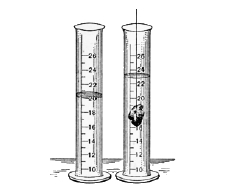
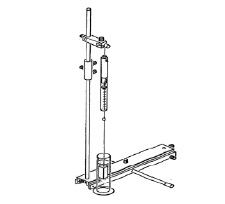

| Objetivo: |
| Comprobar el principio de Arquímedes.
|
| Material |
|
|
| Introducción: |
| Principio de Arquímedes
El hecho de que algunos objetos puedan flotar o que parezcan ser más ligeros cuando se sumergen en un líquido, se debe a una fuerza ascendente que ejercen los fluidos sobre los cuerpos totales o parcialmente sumergidos en ellos. Fue el sabio griego Arquímedes (287- 212ª.C.) quien primero estudió este fenómeno, el cual se conoce precisamente como principio de Arquímedes. Este principio establece que: Todo cuerpo sumergido en un fluido sufre un empuje hacia arriba con una fuerza igual al peso del fluido que se desplaza. Arquímedes, gran pensador griego nació en Siracusa. Estudió las leyes fundamentales de la mecánica, la hidrostática y muchos
conceptos matemáticos. Sobre él se han escrito varias anécdotas, entre las que destaca aquella cuando afirmó: "Dadme un poco de
apoyo y moveré al mundo".
De esta manera, la misma fuerza que sostenía el peso de esa posición de líquido desplazada, sostiene ahora el recipiente, es decir, la fuerza de empuje hidrostática es igual al peso del líquido desplazado. Para poder explicar el fenómeno imaginemos un cuerpo, de forma cualquiera, sumergido en un líquido; el cual ejerce fuerza en torno al cuerpo debido a la presión hidrostática; la presión es mayor en los puntos que se encuentran a mayor profundidad. El empuje Hidrostático es igual al peso del líquido desplazado por un cuerpo, si el peso de éste, es igual al peso del volumen del líquido que desplaza, entonces se mantiene en equilibrio dentro del líquido. Por tanto, existe una fuerza de flotación resultante hacia arriba llamado empuje Hidrostático. El hecho de que un cuerpo flote o se hunda depende de su peso (hacia abajo), y de la magnitud de empuje hidrostático (hacia arriba), si el peso de su cuerpo es mayor que el peso del líquido que desplaza, el cuerpo se hunde. Si el peso es menor que el peso del líquido que desplaza, entonces el cuerpo flota.
Para calcular el valor del empuje hidrostático es necesario considerar el volumen del cuerpo sumergido (el cual será el volumen del líquido desplazado) y el peso específico del líquido. A mayor volumen de líquido desplazado el empuje es mayor; a mayor peso específico, mayor empuje también. Ver Figura 1. Empuje hidrostático = peso específico x volumen E=PeV |
| Desarrollo Experimental: |
|
Preparación:
Experimento 1:
|
| Resultados y Conclusiones: |
| El empuje hidrostático (La reducción del peso) es igual al peso del líquido desplazado. |
| Figura 1: Empuje Hidrostático |
|  |
| Figura 2: Montaje |
|  |